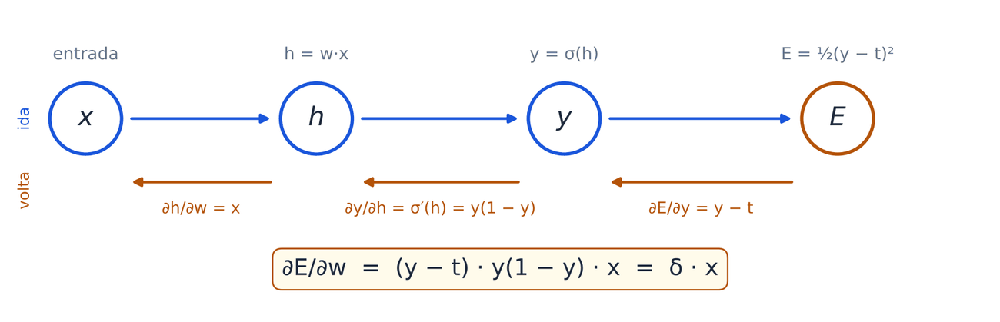
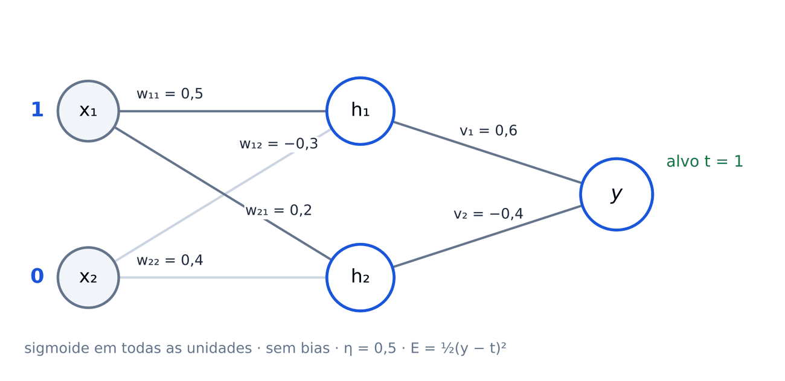

Aprendizado supervisionado: do gradiente à retropropagação. Identifique-se abaixo, faça cada atividade quando o professor pedir e toque em Enviar — sua resposta fica registrada e o gabarito aparece em seguida.
Atividade 1 · 6 min · individual
L(w) = (w − 3)², ∂L/∂w = 2(w − 3), começando em w₀ = 0. Regra: w ← w − η·2(w − 3). Faça as contas no papel antes de usar o simulador.
aCalcule w₁ e w₂ e diga o comportamento para cada η.
bQual o maior η para o qual a descida ainda converge? E com que η o mínimo é atingido em um único passo?
Atividade 2 · 5 min · em duplas, com calculadora
Alvo t = 1 (a imagem é um gato). A rede dá probabilidade p à classe "gato". Erro quadrático: (1 − p)². Entropia cruzada: −ln p.
aCalcule as duas perdas para cada p.
bAgora p = 0,01. Desde p = 0,1, qual perda cresceu mais?
cCom saída sigmoide, ∂E/∂h = 2(p − 1)·p(1 − p) no erro quadrático e ∂E/∂h = p − 1 na entropia cruzada. Calcule os dois em p = 0,01.
Qual perda ensina mais à rede quando ela está confiante e errada?
Atividade 3 · 5 min · individual
az = (3x + 1)². Escreva u = 3x + 1 e calcule dz/dx = (dz/du)(du/dx) em x = 1.
bNeurônio sigmoide: entrada x = 2, peso w = 0,55 (sem bias), alvo t = 0, E = ½(y − t)², η = 0,5. Dado: σ(1,1) ≈ 0,75.
cO peso…

Atividade 4 · 10 min · em duplas, no papel
Rede 2-2-1, sigmoide em todas as unidades, sem bias. Entrada x = (1, 0), alvo t = 1, η = 0,5, E = ½(y − t)². Pesos de entrada (wⱼᵢ: da entrada i para a oculta j): w₁₁ = 0,5, w₁₂ = −0,3, w₂₁ = 0,2, w₂₂ = 0,4; das ocultas para a saída: v₁ = 0,6, v₂ = −0,4.

aIda
bVolta: δ = (y − t)·y(1 − y), δⱼ = hⱼ(1 − hⱼ)·vⱼ·δ
cNovos pesos: Δ = −η · δ · (atividade pré)
Por que w₁₂ e w₂₂ não mudam?
dCom os novos pesos, o erro E…
Atividade 5 · 8 min · individual · opcional
Uma rede pequena treina aqui no celular por retropropagação (tanh nas ocultas, sigmoide na saída, entropia cruzada). Escolha o problema e o número de unidades ocultas e toque em Treinar. A cor de fundo é a resposta da rede.
aXOR com 1 unidade oculta: a rede resolve?
bQual o menor número de unidades ocultas que resolve o XOR?
cTreine o XOR com 2 unidades 5 vezes (Reiniciar entre elas). Dá certo…
dDuas luas com 1, 3 e 10 unidades: o que muda na fronteira? Mais unidades é sempre melhor?
Atividade 6 · 4 min · individual
Erros de uma rede ao longo do treino (dados ilustrativos):
aEm que época você pararia o treino?
bO que está acontecendo depois dela?
cMarque as medidas que reduzem o sobreajuste:
Atividade 7 · 5 min · em duplas · opcional
aPara cada exigência da retropropagação: plausível ou problemática no córtex?
bQue proposta enfrenta o problema 1 (transporte de pesos)?
cClassifique cada afirmação.
C = computacional (o quê e por quê) · A = algorítmico (como) · I = implementação (com quê)